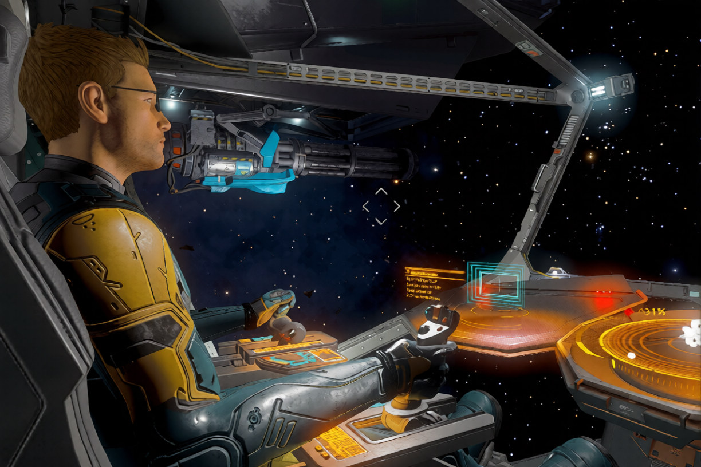
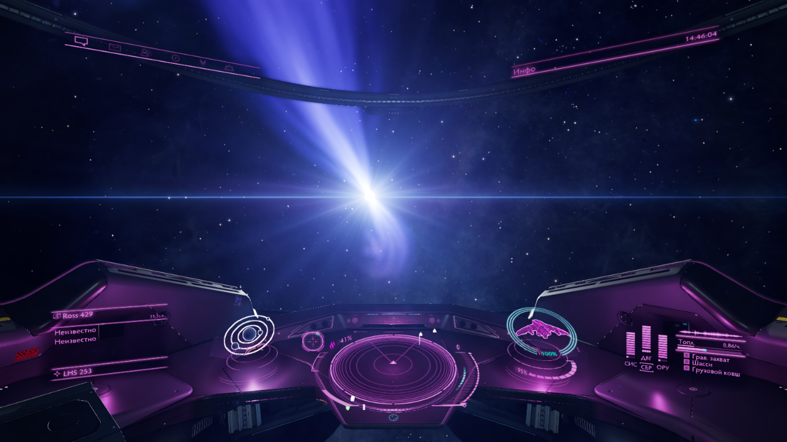

ТАМ, ГДЕ ПРОХОДИТ НАШ МАРШРУТ, НАЧИНАЕТСЯ ФРОНТИР

Frontier Ventures — это объединение независимых командиров
Мы — сообщество пилотов, для которых космос не просто карта, а поле для исследований, торговли и охоты за головами. Мы не привязаны к одной системе и не боимся дальних дорог. Наш дом — там, где проходит наш маршрут.
Мы верим, что космос создан для тех, кто готов идти вперёд
Открывать неизведанное, строить торговые пути, защищать справедливость и зарабатывать на этом. Мы не ждём, пока галактика изменится сама, — мы меняем её своими действиями.
Какие шаги мы предпринимаем?
- Исследуем и картируем галактику: сканируем планеты, ищем редкие биологические виды и прокладываем новые маршруты для будущих экспедиций.
- Торгуем и перевозим ценные грузы: строим надёжные торговые маршруты, просчитываем риски и сопровождаем грузы через опасные системы.
- Охотимся на пиратов и защищаем торговые пути: очищаем системы от угроз, сопровождаем торговцев и охотимся за головами за награду.
- Поддерживаем BGS в домашней системе: выполняем миссии, торгуем и сражаемся, чтобы наша фракция росла и укрепляла своё влияние.

Кого мы стремимся найти
Мы открыты для пилотов любого опыта — от новичков, делающих первые шаги, до ветеранов, знающих галактику вдоль и поперёк.
Что для нас важно:
- Активность и желание участвовать в жизни эскадрильи.
- Уважение к другим пилотам, без токсичности и драм.
- Готовность помогать товарищам и работать на общую цель.
- Интерес хотя бы к одному из наших направлений: исследования, торговля, охота, BGS.
Что не обязательно:
- Активность и желание участвовать в жизни эскадрильи.
- Уважение к другим пилотам, без токсичности и драм.
- Готовность помогать товарищам и работать на общую цель.
- Интерес хотя бы к одному из наших направлений: исследования, торговля, охота, BGS.
Главное — желание быть частью команды.